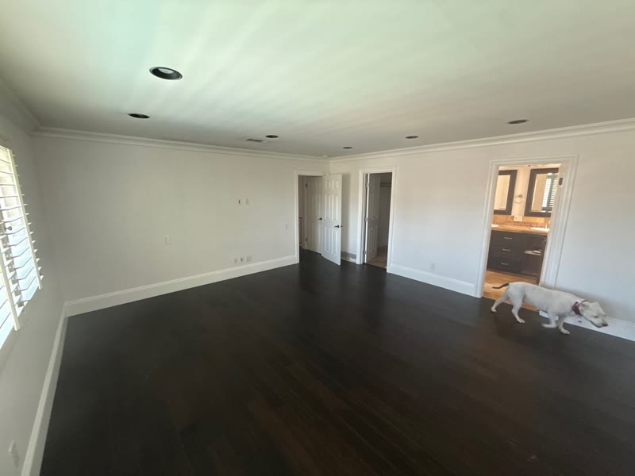
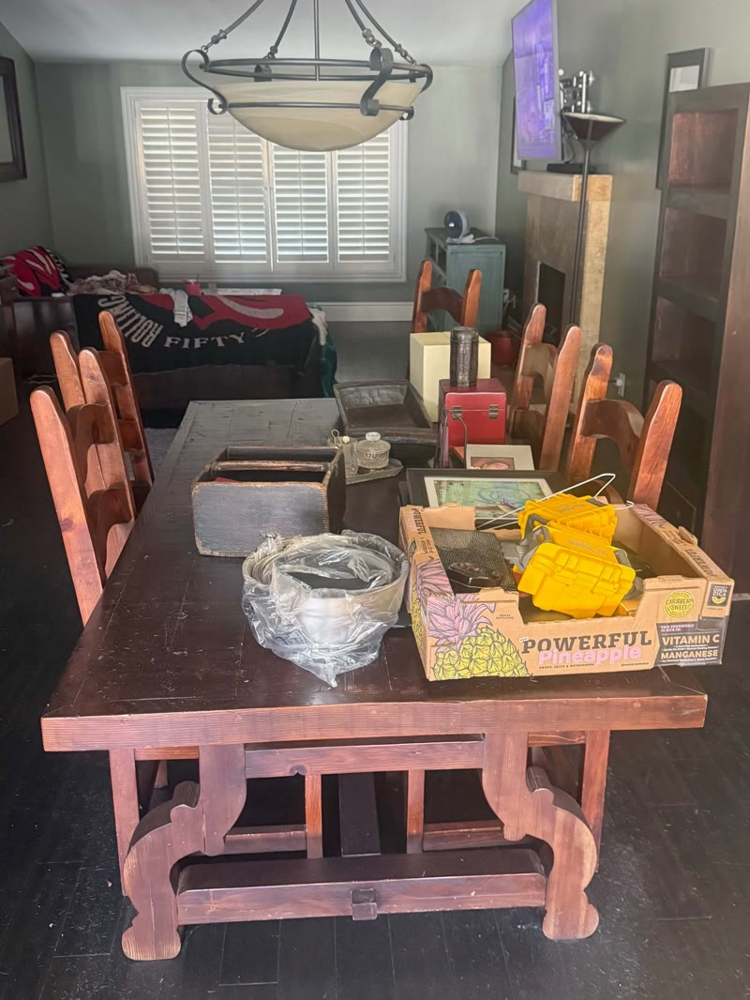
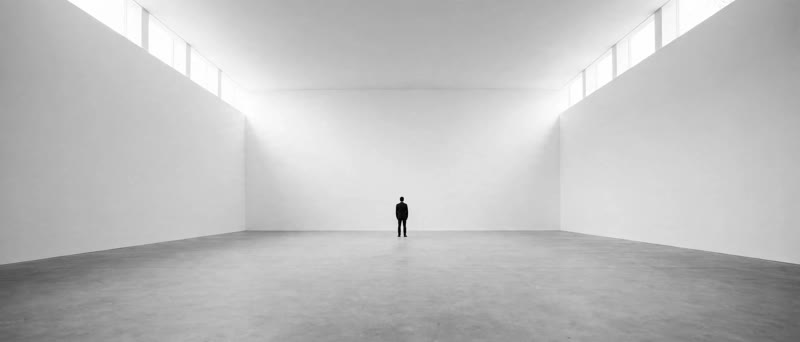
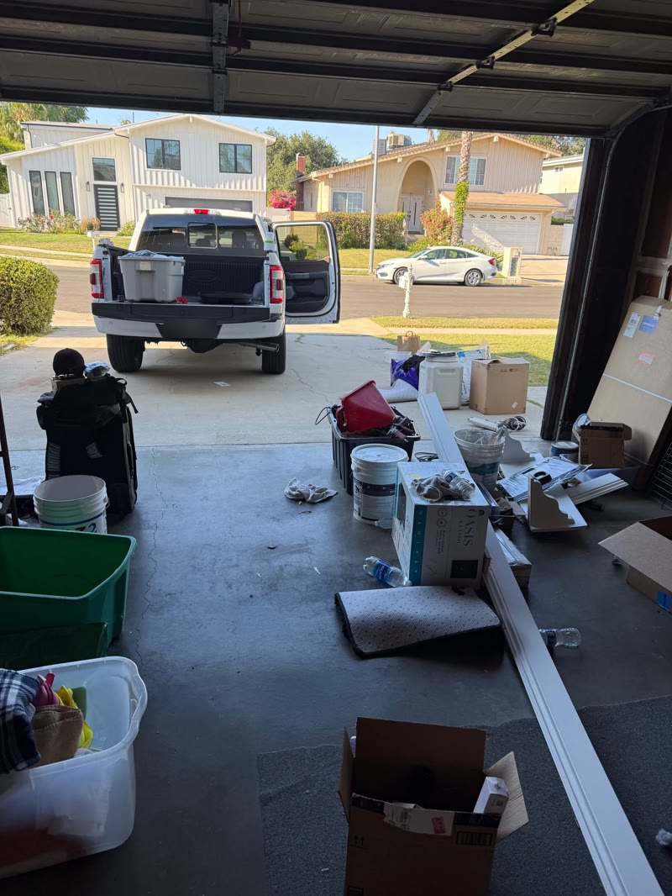
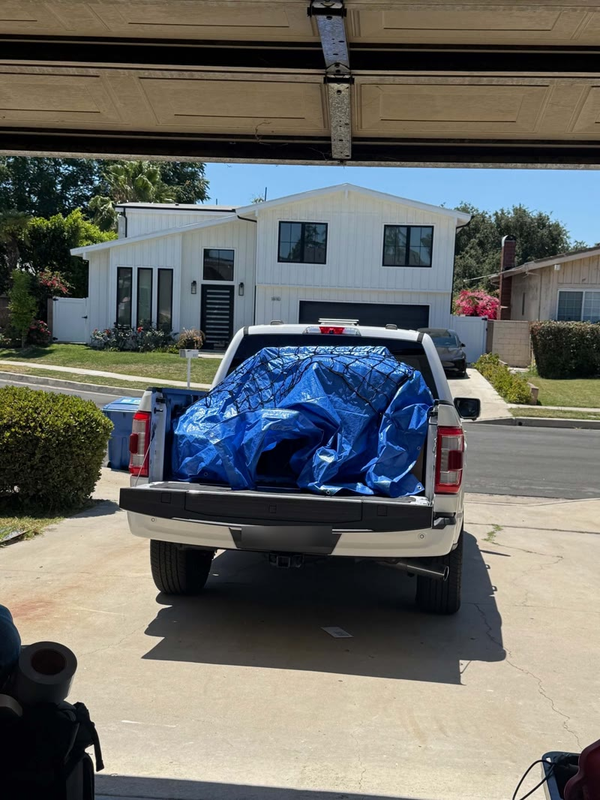
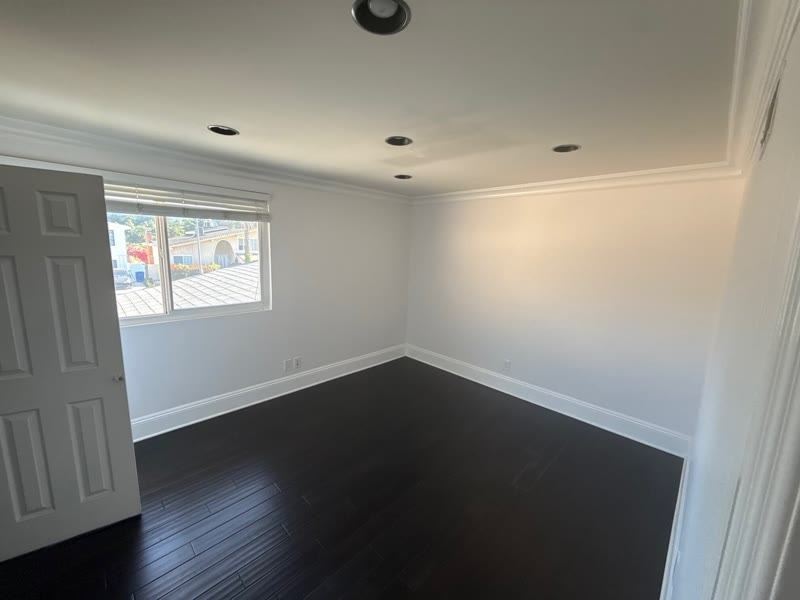
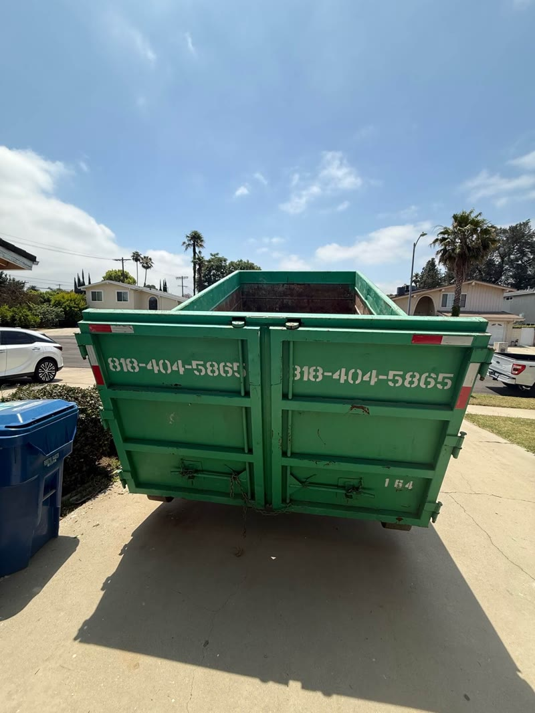
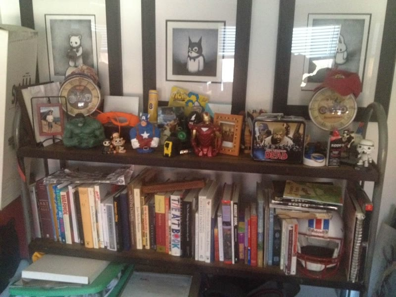

November 20, 2026
Why I gave up all my furniture — and why I'll never go back
Posted in Life

I gave up all my furniture when I moved from Los Angeles to Austin. The movers wanted $14,000 to $20,000, so I got rid of 95% of everything I owned and kept only what I use every day — my computer, a 70-inch TV, a couch, and an air mattress I still sleep on. I don't miss a single thing.
I retired in January, after a long career selling tickets. Then I moved to Austin, into a one-story house, and gave up all my furniture. This is what minimalism turned out to mean to me.
The moving quote that started it

When I decided to move, I called multiple places for delivery of my furniture from Los Angeles to Austin, and I was quoted anywhere from fourteen thousand to twenty thousand dollars. It was just ridiculous to me to move all my furniture, which I wanted to do. And remember, I have four bedrooms upstairs, one bedroom downstairs, a living room, family room, another living room, kitchen, closets, garage — it was just so much stuff. And I knew I was going to move into a smaller house because I wanted to go from a two-story house to a one-story house.
So I said, you know what, let me try to get rid of half of it. And I got another quote which was still six thousand dollars, seven thousand dollars, and I'm just like, it's just ridiculous. So at that moment I decided to really get rid of everything that I could.
And as I was throwing stuff away and cleaning stuff, I just kept getting deeper and deeper and deeper, and one thing led to another, and I just realized that I felt so good cleaning and throwing away everything that I just kept going. I mean, I had probably a hundred shirts, a hundred pairs of pants, shorts, shoes, so much gigantic furniture that was beautiful, but I just didn't care anymore. I just wanted to start over and get rid of it all.
What minimalism means to me now
Now what minimalism actually means to me is just only having the essentials that I use every day, that I need every day. It could be just a giant TV and a couch and an air fryer. As long as I just have enough little stuff that makes me be able to live day by day, it's totally fine.
Before I started, I pictured minimalism as a white room with a tiny little bed and maybe a small little kitchen refrigerator and just a couple appliances. I watched a lot of videos on it. It seemed really interesting to me and I really was drawn to it, but I wasn't sure how I could live with all the stuff that I had and every collectible item and everything — how I can fit it into a little six by six square or whatever it was. So I really didn't have a concept of how it applied to me, but I liked the fact of minimalism.

I even brought paintings with me to Austin that I did, and I don't even want to hang them. I just want them to be there, but on the ground. I just don't need a lot of stuff to be happy.
It's just fake to have so much. Look at me with rooms full of dust everywhere because I never go in there, and you're paying someone to clean my house and I don't even go in those rooms, and there's nothing in there except guest bedrooms and stuff like that. So to me now it just means getting rid of what I don't need, and I just don't buy a lot of stuff that's just useless anymore.
One closet a day

There wasn't one thing that I remember being first. It was just me and Lola. I knew I was so lazy, and I wasn't going to hire workers to pick through stuff to decide what I should throw away and what I should keep, because at the beginning I still wanted to bring everything. So it had to be me to do it.
So I said, I gotta do something every day, whether it's a closet, whether it's a drawer, whether it's a dresser — something every single day. I started with a closet because there was so much crap in there. It was just downstairs, and I was going, oh, I'll bring this jacket, or I'll bring this shirt, I'll bring this hoodie — but I have 25 hoodies upstairs and another 100 shirts upstairs. So I started realizing as I was going through the little closet that I just don't need any of this stuff. I can rebuy it.
So I started just getting one thing done every day — one area, one closet, one drawer, one cabinet, one bedroom, one outside, doing a quarter of the garage and a quarter of my painting studio at a time — and it just kept piling up and piling up, and I kept doing more and more and throwing more and more away. In my head it was: if I don't need this now, and if I need it again, I'll just buy it when I want it. And nothing — I didn't end up going, oh my God, I can't believe I didn't bring this, oh I can't believe I didn't bring that.
What I kept — and the only rule I had
What I actually brought:
- Lola
- My computer — I didn't even bring monitors, I bought them when I got here
- One set of kitchen forks and knives
- My Nutribullet, because that was important to me

But other than that, I just figured I would get whatever I wanted here. The only things that I've gotten here are a big 70-inch TV and a couch. As far as the bed, I brought an air mattress because I figured I would sleep on that at night, and I've ended up loving it, and I just haven't switched anything as of this moment in time.
I don't even know what the 90/90 rule is. I'm too stupid to make my own, and I'm too stupid to follow my own if I did. The only thing that I did kind of say at the beginning: if I haven't worn this, if I haven't picked it up, if I haven't used this, if I haven't taken this out of the drawer in a year, it's got to go. That's kind of the only rule that I had at first.
But by the middle of it, I was just throwing everything away, going, I have 70 cords for phones — I have iPhone 5, 6, 7, 8 — I'm not going to do anything with those. So I just threw everything away. I did start with "if I haven't used it in a year," and it worked, definitely worked. But then I just started throwing everything away or giving it away. Mostly gave it away. I didn't really sell anything because I didn't want people coming over to my house, so I just gave it all away.
The first night — and what I miss

The empty house, the first night, it felt great — the fact that I had completed something that I never thought that I would be able to do. Never in a million years could I have thought that I got everything into a trash bin, donated everything, gave everything away. Thousands of things I just gave away, probably $40,000, $50,000 worth of furniture and artwork and collectibles. That part felt phenomenal.

The house felt echoey because there was nothing on the walls, and that was the only thing that really made me go, huh. It just felt like a brand new echoey house, and I felt great. Like a lot of weight lifted off of me because I didn't have to deal with so much stuff.
I don't miss a single thing. Not one single thing do I miss. I gave all the old family photo albums and videos to my brother and he's happy, and I never once looked at them. There's nothing that I go, darn it, I wish I would have brought. There's nothing at all, not one single thing. And that's the most amazing part — I got rid of everything in my life, so much of forty years of just stuff, and not one single thing can I tell you that I miss. I remember the ones that were my favorite and I can see them in my head, but nothing do I miss at all.

What actually got better
There's nothing actually that I can point to as "this is better today because I got rid of everything," as far as a physical feeling. But every room that I had, everything was collecting dust. So you had to have a maid come in. They're cleaning rooms that I haven't walked into in probably three years, where I never really sat in there or did anything. So it's more that all that's gone. You don't have to have the maid do all that. Now it's just a one-story house. It's smaller. It's just so much easier, and that's the best. Moving to a smaller house that you cannot have as much stuff in — that's the main thing, that's the best part of it.
As far as stress or focus or money, you're saving money on the maid, but there's nothing else. You're just not buying stuff, and right there, if I'm not buying a thousand dollar, two thousand dollar cabinet, then you're saving money. So yes, you're saving money on it all.
How I buy now
There wasn't really a point where I realized that throwing things away wasn't enough. It was more that it just kept happening, that I just wanted to get rid of more and more and more, and I didn't want anything new. I really didn't need anything new. I have every single thing that I want, and the less that you want, the more that you have.
But as far as how I buy things now, I made a promise to myself: if you buy something, you have to throw away, donate, or sell something — you're always replacing one with one. If I wanted to buy a shirt, I had to get rid of a shirt. If I wanted to buy another baseball cap, I had to get rid of a baseball cap. Anything — clothes, shoes — it had to be one for one. And now I try to find something in my house every time that I can throw away that I just don't need.
So it's more not buying retail anymore, buying thrifted, because I love vintage Polo hoodies or vintage Navy hoodies. I won't buy retail anymore, except for maybe shoes, running shoes. I try to just replace something, give something away if I'm replacing something.
Your view should be your view
First, I just want to say your view of minimalism should be your view. It's like alcoholism — if someone is a pure alcoholic and they go, "I'm never drinking again, I can't drink at all, I won't drink at all," the next guy goes, "I'm an alcoholic, but I can drink one drink a day and that's it." So everyone's view of religion, of life, of anything, is their view. Just because the dictionary says this is the definition of minimalism doesn't mean that's what it is.
I'm not crazy minimalist where I have five items and five items only, and if someone can do that, phenomenal, that's not me. My minimalism is: I got rid of 99% of all my stuff — say 95% of all my stuff — and I kept the essentials that I use every single day. So nothing's changed. I use these every single day. I didn't use 95% of my stuff every day. I didn't go to my garage and use 85% of the tools ever. Minimalism is how you picture it and how you define it.
And I'm a Buddhist, and people always ask me stuff about it, and I'm like, this is my own personal journey. It doesn't mean I follow the strict Buddhism, it doesn't mean I do mantras every hour, doesn't mean I meditate every single day, but to me I'm a Buddhist, and that's how I feel, and that's the thing that matters most, more than your perception of what that should be or how I should act or anything.
People say minimalism is boring, cold, or only for rich people. It's not boring. I give away a cabinet that sat in front of my desk — that's not — what is that, fun? So no, it's not boring at all. Minimalism to me, you have what you need. I need a computer every single day. I don't like going out, so I stay home, so I watch TV every single day. I have a giant couch for me and my dog, and a bed, and you don't need anything else. Look at your clothes — you have clothes that you're never going to even wear because you have so many clothes.
It just makes life easier. It's not about rich, it's not about cold, it's not about boring. It just makes your life easier. You have less to stress about. If you have to move, you're not packing the entire house up, it's not that much stuff. So you have to try it. I'll never go back to a giant house, I'll never go back to a two-story house, and I'll never go back to having a ton of stuff that I just don't need.
A few questions, answered
Do you miss anything you gave away?
Not a single thing. I gave all the old family photo albums and videos to my brother, and he's happy — I never once looked at them. I got rid of so much of forty years of stuff, and I can't name one thing I miss.
What did you actually keep?
Lola, my computer, one set of kitchen forks and knives, and my Nutribullet. In Austin I bought a 70-inch TV, a couch, and an air mattress I still sleep on.
Did you follow the 90/90 rule?
I don't even know what the 90/90 rule is. The only rule I had at the start was: if I hadn't used it in a year, it had to go. By the middle I was just throwing everything away.
Is minimalism only for rich people?
It's not about rich, it's not about cold, it's not about boring. It just makes your life easier. You have less to stress about, and if you have to move, you're not packing the entire house up.
How do I start minimalism?
Start with one closet. That was my rule: do something every day — a closet, a drawer, a dresser. If you haven't worn it, picked it up, or taken it out of the drawer in a year, it goes.
Does minimalism save money?
It did for me. I stopped paying a maid to clean rooms I hadn't walked into in three years, and I stopped buying things like $1,000 cabinets I didn't need. Less stuff coming in means less money going out.
Isn't minimalism boring?
There's a cabinet in front of my desk. What is that, fun? Minimalism is having what you need — a computer, a TV, a giant couch for me and my dog, a bed — and less to stress about. You have to try it.
How long does it take to become a minimalist?
About a month, for me — and that wasn't every single day of the month. I took days off. But every day I worked on it, I did something: a closet, a drawer, a dresser.
The house feels great. The house is warm. It's got what I need. It's got the essentials that I need. I don't need everything else. There's no difference. It's a house. It's just where you stay. You go to bed, you eat, you leave, you go to work for nine hours, and so the house feels perfect for me.
More writing
- November 24, 2026
11 P.M. at Crunch Southpark Meadows
I work out at 11 p.m. seven nights a week. Moving to Austin, every house got measured against one question: how far is the nearest gym that's open at midnight?
- November 22, 2026
Say Nothing, and Mean It
You read the long angry message at 11:52 at night, wrote three replies in your head, and sent none of them.
- November 21, 2026
The Quiet Kind of Strong
The strongest people I know show up, hold it together in public, then sit in the truck for twenty minutes before going inside.
- November 18, 2026
Why I started this site
I retired in January and started learning to build on the web with AI. This site is where I practice.